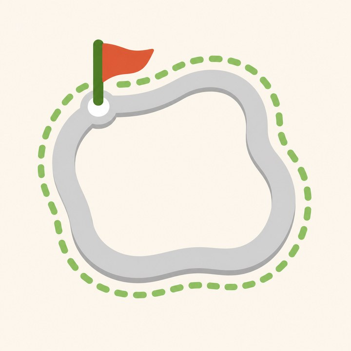

iPhone・iPad の散歩コースづくり
距離を選ぶと、
ひとまわりの道。
出発地と歩きたい距離（1〜20 km）を選ぶと、道に沿って出発地に戻ってくる周回のコースを作ります。「ちがう道で作り直す」で毎回ちがう向きに。できたコースは Apple のマップか Google マップに立ち寄り先つきで渡して、そのまま歩き出せます。
App Store で配信予定買い切りで全部の機能が使えます。アプリ内課金・サブスクリプション・広告はありません。地図と道順は Apple の地図のサービスを使います。

こんな困りごとのために
道沿いの距離が有料
買い切りで、1〜20 km の道沿いのコースが作れます。
距離が合わない
道順を引いた長さを見て組み直し、目標の距離に近づけます。外れたときは何 km ずれたかを出します。
保存の上限・整理
保存は数の上限なし。フォルダとお気に入りで分けられます。
ほかの機器に持ち出したい
GPX で書き出せます。
できること
| 作る | 出発地（今いる場所・地図・住所）と距離から周回のコース・作り直し・階段を避ける |
|---|---|
| 直す | 立ち寄り先を長押しで動かす・地図を押して足す |
| 歩く | Apple のマップか Google マップに立ち寄り先つきで渡す・目安の時間 |
| データ | 保存の上限なし・フォルダ・GPX・iCloud Drive の毎日の控え |
使い方・プライバシーポリシー・利用規約もご覧ください。